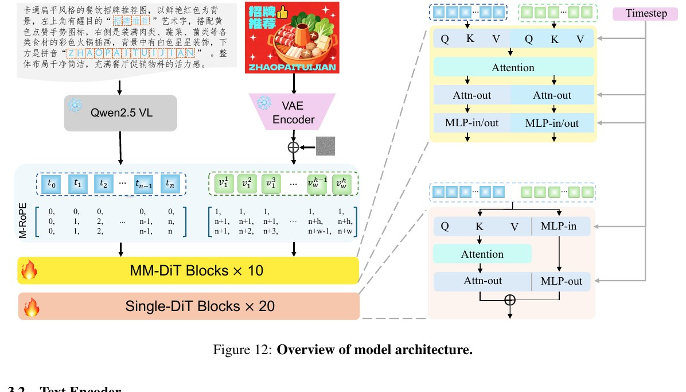
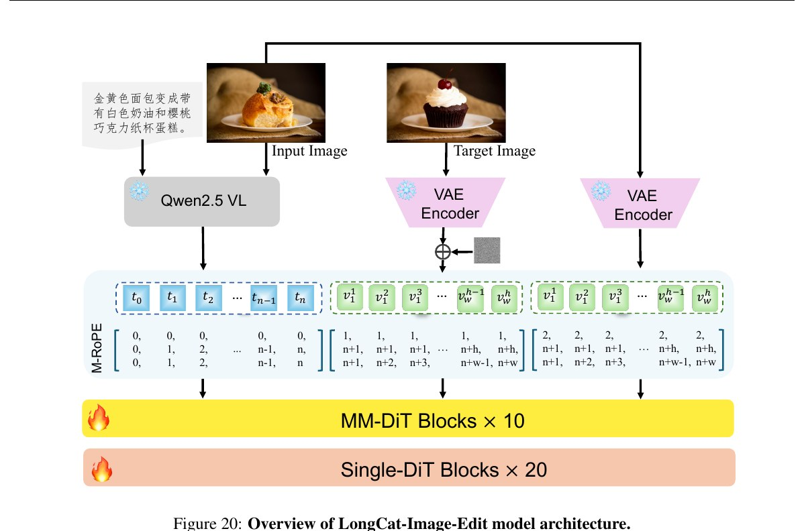
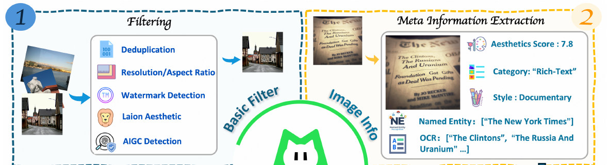
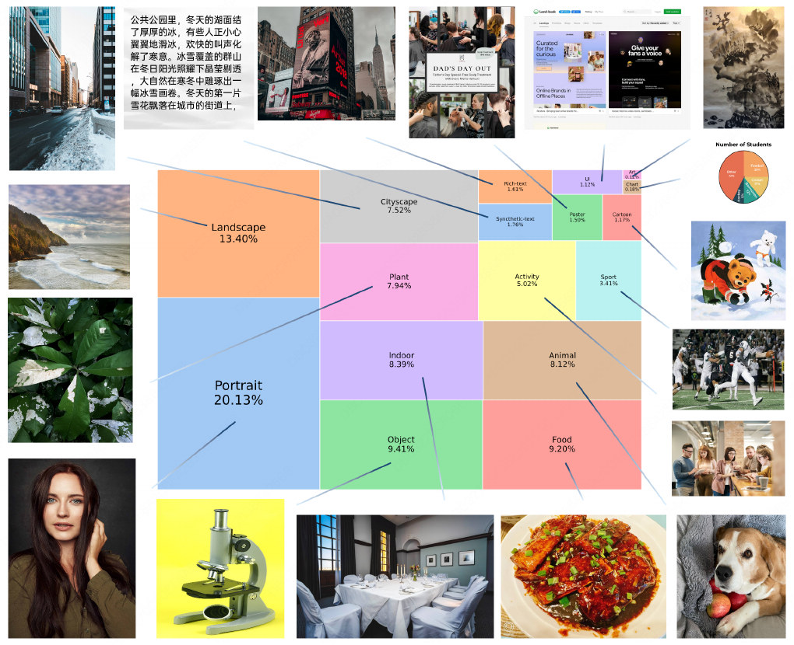
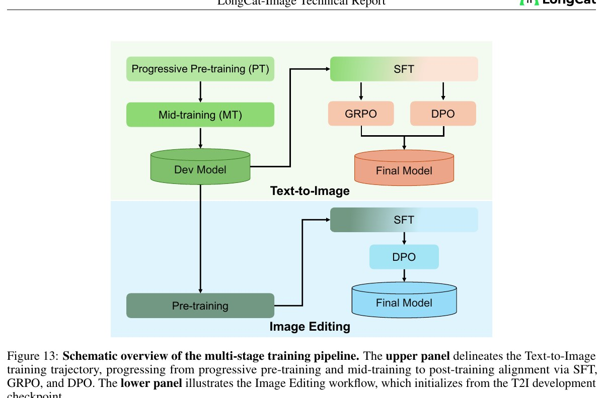

速览
论文日期：arXiv v1 published 2025-12-08（PDF 页眉 arXiv:2512.07584v1 [cs.CV] 8 Dec 2025）。本页所有数字对照该版本。
一句话之外的五条
不靠堆参数：6B 主干对标 20B
沿用 FLUX.1-dev 的双流→单流 DiT 和 VAE，主干 6B§1；GenEval 0.87 与 Qwen-Image（20B）持平表 2，WISE 0.65 为表内开源扩散模型最高表 4。
真实感来自「零 AIGC」数据纪律
预训练和 mid-training 用内部 AIGC 检测器清掉合成图§2.1.1；SFT 里的合成图逐张人工挑§2.1.4；RL 再把 AIGC 检测器当奖励模型§4.3.2。人评 Realism 略胜 Seedream 4.0（仅图示，无数字）图 14。
中文字库覆盖是最大亮点
引号内文本走字符级 tokenizer§3.2，SynthDoG 合成 >1000 万样本并按「每个字的错误率」动态加权§4.1。ChineseWord L3（生僻字）70.3，对手最高 6.1表 7。但作者自认多字序列稳定性下降§5.1.2。
编辑：从 Dev 权重起步 + 一致性数据卡死
编辑模型初始化自 mid-training ckpt 而非 SFT/RL 后的权重§6.3.1；SFT 只用严筛的高一致性数据，「标准稍放松，一致性就断崖下跌」§6.3.2。ImgEdit 4.50表 11，GEdit-EN G_O 7.64（Seedream 4.0 为 7.68）表 10。
人评仍落后两家商业模型
编辑 SBS 中，对 Nano Banana 综合质量胜率约 39.2%、对 Seedream 4.0 约 43.1%；对 Qwen-Image-Edit[2509] 约 58.7%、对 FLUX.1 Kontext[Pro] 约 60.5%图 22。T2I 与编辑没能合成一个模型，作者归因于编辑合成数据拖累真实感§6.4。
架构：FLUX 骨架 + Qwen2.5-VL 条件 + 原版 3D MRoPE
骨架本身不新，改动集中在条件编码、文字 tokenization 和位置编码上。

DiT 主干 沿用 FLUX.1-dev
- 前段双流注意力、后段单流，块数比约 1:2§3.1；图 12 标注为 MM-DiT ×10 + Single-DiT ×20图 12。
- 主干约 6B，远小于「近 20B 或更大的 MoE」摘要。
VAE 沿用 FLUX.1-dev
- 8× 空间压缩，再做 2×2 token merge，序列长度 = H×W / (16×16)§3.1。
- 选它的理由：细字体、复杂纹理的重建保真度更好§3.1。
文本编码器 改动
- Qwen2.5VL-7B 统一编码 T2I 和编辑条件§3.2。
- 不再把文本嵌入注入 timestep 做 adaLN 调制，作者称增益可忽略§3.2。
- 引号内的待渲染文本用字符级 tokenizer，不引入 GlyphByT5 这类专用编码器；称能提升数据效率、加速收敛§3.2（无量化消融）。
位置编码 改动
- 原版 3D MRoPE，不做居中、频率缩放、插值等技巧§3.3。
- 第 1 维区分模态（文本 / 噪声 latent / 编辑参考图），后 2 维为 (x, y)；文本两坐标相同，退化为 1D-RoPE§3.3。
编辑分支 LongCat-Image-Edit 改动
- 参考图过 VAE 得 latent，MRoPE 第 1 维取不同值（图 20 中为 2），空间维与噪声 latent 对齐，沿序列维拼接§6.2 · 图 20。
- 源图 + 指令一起送进 Qwen2.5-VL，并用不同 system prompt 区分编辑与 T2I§6.2。
Prompt 改写 工程
- 默认复用同一个 Qwen2.5-VL 做 prompt 扩写，弥合训练时的稠密 caption 与用户短 query 的差距，不依赖外部 API§3.4。
- WISE 评测时也用这个编码器做「内在 prompt 增强」§5.1.1。

数据：12 亿样本、四段式管线、多粒度 caption
全篇最用功的部分。T2I 管线 = 过滤 → 元信息抽取 → 多粒度 caption → 分层；编辑数据另起一套（本节下半）。

① 过滤：每条规则都给了阈值
② 元信息：五个属性，各管一件事
用于配比与分层 类别 · 风格 · 美学
- 类别：16 类固定标签——portrait、sport、activity、plant、animal、food、object、landscape、cityscape、indoor、UI、cartoon、chart、rich-text、poster、synthetic text§2.1.2。
- 风格：让开源 VLM 输出开放式风格短语，不限定标签集§2.1.2。
- 综合美学：拆成正交两维、六种方法集成——Quality（饱和度 / 对比度 / RGB·HSV 色彩丰富度 + MUSIQ + Q-Align），Artistry（VLM 评构图、光影、色调 + Q-Align-Aesthetics）§2.1.2 · 图 7。
用于 caption 准确性 命名实体 · OCR
- 命名实体：用 VLM 识别名人、虚构角色、生物物种、商业品牌、IP，结果喂给后续 recaption§2.1.2。
- OCR：OCR 模型抽取图中文字，经「专门处理流程」并入 caption§2.1.2；具体处理规则 原文未披露。
类别分布：原文图 5 给出了占比
以下为图 5 树图中的类别占比（原文未说明是全部 12 亿样本还是某一阶段子集）。人像一类就占 1/5；文字相关四类（synthetic-text / rich-text / poster / UI）合计约 6%推算。
来源：论文图 5（Overview of training data）。Art 一项在图中字号过小，仅能读出约 0.1x%。

③ 多粒度 caption（MGC）：四级 + 固定采样概率
作者点名 VLM caption 的三个毛病：缺世界知识（实体写错）、同一 VLM 格式单一、啰嗦导致信息密度低§2.1.3。解法是分四级生成，每级用不同模型：
Photographic Captioner 的写法长什么样图 9 / 图 10 要点
- 图 9 对比：Photographic 级 caption 把实体直接写成专名（如球员姓名、球队、赞助商、地标），用不同色块标注属性词、程度词、专名；基线 QwenVL 输出更长、更多泛化描述图 9。
- 图 10 给出同一张图四级 caption 的样例，中英文都有：Entity 只是一句名词短语，Phrase 是逗号分隔的属性串，Composition 一两句，Photographic 最长、含文字内容（如海报上的中英文原文）图 10。
- L4 微调数据的规模、标注规范 原文未披露；caption 语言配比 原文未披露。
④ 分层：按阶段控制风格与质量
预训练 艺术数据压到 ≈0.5%
早期大量插画 / 卡通 / 动漫会让模型偏向简化视觉模式、写实子空间「塌陷」，所以艺术数据限制在预训练语料约 0.5%§2.1.4。
Mid-training 0.5% → 2.5%
从预训练语料挑 >1024px、锐利、构图好、美学分高的子集；风格化数据按「校准过的日程」从 0.5% 逐步升到 2.5%§2.1.4。规模为「数百万」§4.2。
SFT 真实 + 人工筛合成
专家从 mid-training 集手挑真实图（构图、光线、色调、情绪，类别均衡）；合成图人工剔除结构畸变、不真实、审美缺陷§2.1.4。总量「数十万」§4.3.1。
长尾合成 LoRA 造数据
在少量样本上训多个领域 LoRA，生成稀有概念 / 罕见构图 / 独特风格图，以「受控低比例」并入 mid-training§2.2。具体比例 原文未披露。
合成文字数据：为中文长尾字服务
- 动机：中文约 3,000 常用字 + 5,000 余生僻字，后者在自然数据中稀疏§4.1。
- SynthDoG 渲染 >1000 万样本，底纹简单（纸、玻璃、黑板），字体多样§4.1；语料取自古典诗词、生僻字表，caption 写明内容、颜色、字体、排版方向§2.2 · 图 11。
- 按字动态采样：实时监控每个字的准确率，错误率高的字提高采样概率，学会的字逐步换成真实图；预训练最后阶段完全撤掉合成文字，防止过拟合简单合成域§4.1。
- SFT 阶段改用真实文字图，RL 阶段加 OCR 和美学奖励§1。
编辑数据（LongCat-Image-Edit）
已披露规模一览（编辑 + T2I）无比例的项不画条形
| 数据 | 规模 | 来源 |
|---|---|---|
| T2I 总语料 | 1.2 billion 样本 | §2 |
| 合成文字（SynthDoG） | >10 million | §4.1 |
| T2I mid-training 集 | millions（数百万） | §4.2 |
| T2I SFT 集 | hundreds of thousands（数十万） | §4.3.1 |
| T2I DPO 偏好集 | 每 prompt 6 张候选，打 1–5 分；总量 原文未披露 | §4.3.2 |
| 编辑预训练集（各来源） | 各来源规模 原文未披露；任务占比见原文图 19 | §6.1 · 图 19 |
| 编辑 SFT 集 | hundreds of thousands（真实照片 + 专业人工精修 + 合成） | §6.3.2 |
| 编辑 DPO 偏好集 | 每 prompt 5 张候选，标 winner / losers；总量 原文未披露 | §6.3.3 |
| 编辑预训练：编辑 vs T2I | 「balanced batch ratio」，具体数值 原文未披露 | §6.3.1 |
图 19 为编辑预训练数据的任务占比饼图，未随本页裁出；文本层提取的百分比与标签错位，本页不转录。
训练配方：三段预训练 → MT → SFT → DPO → GRPO/MPO

T2I 预训练与 mid-training
256px
- LR
- 1e-4 const
- 步数
- 900K
- batch
- 4608
512px
- LR
- 5e-5 const
- 步数
- 300K
- batch
- 4608
512–1024px 连续
- LR
- 2e-5 const
- 步数
- 200K
- batch
- 3072
高质 + 风格注入
- LR
- 1e-5 const
- 步数
- 70K
- batch
- 3072
表 1 共用：AdamW（β1=0.9, β2=0.95）、weight decay 0.01、梯度裁剪 1.0表 1。按步数 × batch 粗算，三段预训练约 6.1B 样本次，MT 约 2.15 亿样本次推算。全程 bucket sampling 适配宽高比§4.1。
预训练里的几个讲究
- 保留 512px 中间段，避免 256 直接跳到最终段的不稳定§4.1。
- 实时监控 val loss、图文对齐、美学分、OCR 准确率；作者观察到这些指标在 MT 和后训练阶段区分力明显下降§4.1。
- 合成文字按字错误率动态采样，末段撤出§4.1。
Mid-training = 开源的 Dev 版
- 美学模型 + 质量估计 + 领域分类器 + 人工复核，数据比预训练严得多§4.2。
- 该阶段权重作为 Developer Version 开源，理由是保留可塑性、避免 RL 带来的模式坍缩§4.2。
后训练
LR 1e-5 cosine · 20K 步 · batch 128 · warm-up 1000表 1
- 数十万条真实 + 合成混合，专家校验§4.3.1
- 权重平均：分别在光照、人像、艺术风格等子集上微调多个候选，再参数平均§4.3.1
- timestep 采样从 Logit-Normal 换成 Uniform，加大高频细节步的权重§4.3.1
LR 1e-5 cosine · 4K 步 · batch 64 · warm-up 1000表 1
- 类别均衡 PromptSet（公开数据中的真实用户 query，聚类清洗）§4.3.2
- 每 prompt 6 个种子出图，人工 1–5 分；丢掉 3 分，4–5 为正、1–2 为负§4.3.2
- 探索多轮 DPO、按梯度范数跳过脏数据、KL 约束；结论仅为「显著降低 bad case 率」§4.3.2
小规模 on-policy 精修
- 奖励模型：畸变检测、AIGC 检测、人类偏好、OCR 准确率§4.3.2
- GRPO 按 DanceGRPO，ODE 改写成 SDE 采样§4.3.2
- MPO（自提）：每 prompt 单条轨迹、单次更新；高斯 value tracker（Kalman 式更新 + KL 自适应遗忘）、全局优势归一化、按不确定度的 prompt 课程§4.3.2
- §4.3.2 给的超参：AdamW 恒定 LR 5e-6、batch 64、12 步 SDE 采样，g_t 0.1→0 线性退火；MPO λ=0.99、η=1.0、α=1.0、γ=0.5§4.3.2
- 表 1 的 GRPO 列：LR 1e-5 cosine、300 步、batch 32表 1（与上一条不一致）
编辑模型训练
Pre-training
- 初始化自 T2I mid-training ckpt§6.3.1。
- 512×512 用大规模含噪数据快速收敛 → 1024×1024 用高质数据§6.3.1。
- 与 T2I mid-training 数据按平衡 batch 比例联合训练，SFT 沿用§6.3.1。
- 超参（LR、步数、batch）原文未披露。
SFT → DPO
- SFT：数十万条，人工重点卡源图–结果的结构对齐；与 T2I SFT 数据联合训练§6.3.2。
- DPO：MLLM 合成 + 真实用户 query，聚类过滤；每 prompt 5 个种子，专业标注挑 winner 和 losers；梯度离群样本跳过 + KL 约束§6.3.3。
- 超参 原文未披露。
评测：文字渲染与编辑最强，通用对齐与商业模型接近
对比对象主要是 Seedream 4.0（商业）、Qwen-Image / Qwen-Image-Edit（开源 20B）、HunyuanImage-3.0（开源 MoE），编辑再加 Nano Banana、GPT Image 1、FLUX.1 Kontext。
文生图：精选对比
| 基准 | LongCat-Image | Seedream 4.0 | Qwen-Image | HunyuanImage-3.0 | 来源 |
|---|---|---|---|---|---|
| 通用对齐 | |||||
| GenEval Overall | 0.87 | 0.84 | 0.87 | 0.72 | 表 2 |
| DPG-Bench Overall | 86.80 | 88.25 | 88.32 | 86.10 | 表 3 |
| WISE Overall | 0.65 | 0.78 | 0.62 | 0.57 | 表 4 |
| 文字渲染 | |||||
| GlyphDraw2 Avg | 0.95 | 0.97 | 0.93 | 0.78 | 表 5 |
| GlyphDraw2 Complex-zh | 0.92 | 0.91 | 0.87 | 0.85 | 表 5 |
| CVTG-2K Word Acc（avg） | 0.8658 | 0.8917 | 0.8288 | 0.7650 | 表 6 |
| CVTG-2K NED | 0.9361 | 0.9507 | 0.9297 | 0.8765 | 表 6 |
| ChineseWord L1 / L2 / L3 | 98.7 / 90.8 / 70.3 | 94.8 / 41.2 / 2.3 | 92.5 / 37.1 / 6.1 | 83.5 / 31.3 / 4.1 | 表 7 |
| Poster&Scene Avg（内部 500 prompt） | 91.5 | 91.6 | 89.2 | 87.1 | 表 8 |
ChineseWord：按《通用规范汉字表》构建 8,105 个 prompt，每字套固定模板，用 PPOCRv5 判读（作者称 MLLM 认不出生僻字）§5.1.2。注意 CVTG-2K 正文称 SOTA，但表 6 中 Seedream 4.0 的 Word Acc 与 NED 都更高；论文的 SOTA 表述应理解为相对开源模型。
完整 GenEval / DPG / WISE 子项LongCat 行与主要对手
| 模型 | GenEval 单物体 | 双物体 | 计数 | 颜色 | 位置 | 属性绑定 | DPG Global | Entity | Relation | WISE 文化 | 化学 |
|---|---|---|---|---|---|---|---|---|---|---|---|
| LongCat-Image | 0.99 | 0.98 | 0.86 | 0.86 | 0.75 | 0.73 | 89.10 | 92.54 | 93.28 | 0.66 | 0.49 |
| Qwen-Image | 0.99 | 0.92 | 0.89 | 0.88 | 0.76 | 0.77 | 91.32 | 91.56 | 94.31 | 0.62 | 0.40 |
| Seedream 4.0 | 0.99 | 0.92 | 0.72 | 0.91 | 0.76 | 0.74 | 94.10 | 92.28 | 93.67 | 0.78 | 0.67 |
| HunyuanImage-3.0 | 1.00 | 0.92 | 0.48 | 0.82 | 0.42 | 0.63 | 92.12 | 92.53 | 92.13 | 0.58 | 0.31 |
| FLUX.1-dev | 0.98 | 0.81 | 0.74 | 0.79 | 0.22 | 0.45 | 74.35 | 90.00 | 90.87 | 0.48 | 0.35 |
来源：表 2、表 3、表 4。WISE 中 GPT4o 为 0.80（统一模型组）表 4。
图像编辑：CEdit / GEdit
| 模型 | CEdit-EN G_SC | G_PQ | G_O | CEdit-CN G_O | GEdit-EN G_SC | G_PQ | G_O | GEdit-CN G_O |
|---|---|---|---|---|---|---|---|---|
| 闭源 | ||||||||
| GPT Image 1 [High] | 8.64 | 8.26 | 8.17 | 8.21 | 7.85 | 7.62 | 7.53 | 7.30 |
| Nano Banana | 7.51 | 8.17 | 7.20 | 7.36 | 7.86 | 8.33 | 7.54 | 7.25 |
| Seedream 4.0 | 8.12 | 7.95 | 7.58 | 7.57 | 8.24 | 8.08 | 7.68 | 7.71 |
| FLUX.1 Kontext [Pro] | 6.79 | 7.80 | 6.53 | 1.43 | 7.02 | 7.60 | 6.56 | 1.23 |
| 开源 | ||||||||
| Qwen-Image-Edit | 8.07 | 7.84 | 7.52 | 7.46 | 8.00 | 7.86 | 7.56 | 7.52 |
| Qwen-Image-Edit [2509] | 8.04 | 7.79 | 7.48 | 7.37 | 8.15 | 7.86 | 7.54 | 7.49 |
| Step1X-Edit | 6.68 | 7.36 | 6.25 | 6.35 | 7.66 | 7.35 | 6.97 | 6.86 |
| LongCat-Image-Edit | 8.27 | 7.88 | 7.67 | 7.65 | 8.18 | 8.00 | 7.64 | 7.60 |
来源：表 9（CEdit）、表 10（GEdit）。G_SC = 语义一致 / 指令遵循，G_PQ = 感知质量，G_O = 综合；CEdit 用 GPT-4o 自动打分§6.5.1。FLUX.1 Kontext 的 CN 分只有 1.x，是中文指令基本不被执行导致，不代表画质。方括号 [Pro] / [2509] / [High] 为原文的版本记号。
ImgEdit-Bench 子项表 11 节选
| 模型 | Add | Adjust | Extract | Replace | Remove | Background | Style | Hybrid | Action | Overall |
|---|---|---|---|---|---|---|---|---|---|---|
| LongCat-Image-Edit | 4.51 | 4.57 | 3.93 | 4.76 | 4.60 | 4.49 | 4.85 | 4.01 | 4.74 | 4.50 |
| Qwen-Image-Edit [2509] | 4.32 | 4.36 | 4.04 | 4.64 | 4.52 | 4.37 | 4.84 | 3.39 | 4.71 | 4.35 |
| Nano Banana | 4.50 | 4.47 | 3.75 | 4.64 | 4.51 | 4.44 | 4.14 | 4.03 | 4.65 | 4.35 |
| GPT Image 1 [High] | 4.61 | 4.33 | 2.90 | 4.35 | 3.66 | 4.57 | 4.93 | 3.96 | 4.89 | 4.20 |
| Seedream 4.0 | 4.52 | 4.41 | 2.93 | 4.56 | 4.44 | 4.30 | 4.76 | 3.33 | 4.36 | 4.18 |
| FLUX.1 Kontext [Pro] | 4.25 | 4.15 | 2.35 | 4.56 | 3.57 | 4.26 | 4.57 | 3.68 | 4.63 | 4.00 |
人工评测
T2I：MOS 四维 只给图，无数字
400 prompt 黑盒集，评 Alignment / Plausibility / Realism / Aesthetics§5.2。文字结论：全面胜 HunyuanImage 3.0；与 Qwen-Image 在对齐与合理性上持平；Realism 胜 Qwen-Image 且略胜 Seedream 4.0；美学略逊 Qwen-Image§5.2 · 图 14。
编辑：SBS 胜率 胜率 =（胜 + 0.5×平）/ 总
| LongCat-Image-Edit vs | 综合质量 | 一致性 |
|---|---|---|
| Nano Banana | 39.2% | 46.1% |
| Seedream 4.0 | 43.1% | 43.7% |
| Qwen-Image-Edit [2509] | 58.7% | 54.2% |
| FLUX.1 Kontext [Pro] | 60.5% | 63.0% |
约 400 样本，覆盖全局 / 局部 / 文字修改 / 参考引导编辑§6.5.2。数值读自图 22 的堆叠条；对手与行的对应关系按图例顺序与正文结论推定。
新在哪
骨架、VAE、DPO、GRPO 都是现成的；下面是可以核对、且不是常规工程的几处。
按字错误率驱动的合成文字课程
SynthDoG 数据的采样权重随每个汉字的实时准确率调整，学会即退场，预训练末段整体撤出§4.1。配合引号内字符级 tokenizer§3.2，ChineseWord L3 从对手的个位数拉到 70.3表 7。
缺口：没有「不做动态采样」或「不做字符级编码」的消融。
AIGC 检测器既做数据过滤也做 RL 奖励
预训练 / MT 用它排除合成图，RL 阶段把同类检测信号作为奖励之一，推动真实质感§1 · §4.3.2。
证据只有人评 Realism 的定性描述§5.2，没有单独的奖励消融。
四级 caption + 固定采样概率
Entity / Phrase / Composition / Photographic 分别由 Qwen2.5-VL、InternVL2.5 和 LoRA 微调的 Photographic Captioner 生成，训练按 0.05 / 0.1 / 0.2 / 0.65 采样§2.1.3。
多粒度 caption 本身不新，可核对的是这套具体分工和比例。
MPO：去掉 group 的单轨迹 on-policy RL
每 prompt 一条 SDE 轨迹、一次更新，用 per-prompt 高斯 value tracker 作基线、按不确定度做 prompt 课程§4.3.2。
文中称「效率和稳定性优于 GRPO」，但没给对比曲线或数值；最终模型用的是 GRPO 还是 MPO 也没写清。
编辑从 mid-training 权重起步，并公开 Dev 版
理由是 SFT/RL 后的权重处在收窄的状态空间，不利于学编辑§1 · §6.3.1；对应地把 MT 权重作为 Developer Version 开源§4.2。另公开自建的 CEdit-Bench（1,464 对、15 类）§6.5.1。
对图像编辑数据 / 评测 / caption 的启示
每条先写论文怎么做（带出处），下面灰底是迁移建议，不是论文内容。
D1一致性数据门槛宁严勿松
编辑 SFT 人工专卡源图–结果结构对齐；作者称标准稍放松，一致性就「断崖下跌」§6.3.2。预训练阶段也按任务定制策略剔除一致性差的样本§1。
迁移建议，不是论文内容：把「非编辑区保持」拆成独立判定项（掩膜外像素差 / 身份 / 版式），SFT 集按最严档入库；宽松档只进预训练，并记录档位以便回溯。
D2结构变化类编辑去视频里挖
合成方法做不好姿态、视角变化，改用视频：多模态模型定位目标 + 光流量化变化，取「显著但连贯」的关键帧对，自动写指令，抽样人工核验§6.1.3。
迁移建议，不是论文内容：用光流幅度设上下两道阈值（太小=没变化、太大=镜头切换），再用分割掩膜面积限定「只有主体在动」，产出动作 / 视角编辑对。
D3合成编辑数据会伤 T2I 真实感
尝试 T2I 与编辑合一，发现编辑预训练大量依赖合成数据会明显降低 T2I 真实感，最终拆成两个模型；作者认为是数据问题而非架构问题§6.4。
迁移建议，不是论文内容：给每条编辑样本打「目标图是否为模型生成」标记，统计合成占比；做统一模型时把目标图真实性当一等指标监控，而不只看编辑分数。
D4编辑与 T2I 联训防遗忘
编辑预训练与 SFT 都按平衡 batch 比例混入 T2I 数据，称同时提升语义理解与画质§6.3.1 · §6.3.2。
迁移建议，不是论文内容：把 T2I 混入比例当超参扫 2–3 档，并固定一组 T2I 回归集，每个 ckpt 同时出编辑分和 T2I 分。
C1多粒度 caption 按概率混采
四级 caption，训练按 0.05 / 0.1 / 0.2 / 0.65 采样，偏向最详细的 Photographic 级§2.1.3。
迁移建议，不是论文内容：编辑指令也做「短命令 / 标准句 / 带保持约束的长描述」三档，训练混采；评测时三档分开报分，看模型是否只会吃长指令。
C2先抽实体和 OCR，再写 caption
命名实体（名人、品牌、IP、物种）与 OCR 文本先抽出，再作为输入喂给 caption 模型，解决「实体写错、文字缺失」§2.1.2。
迁移建议，不是论文内容：文字编辑类样本把源图 OCR 结果作为结构化字段（原文 → 目标文）写进指令，用 OCR 回读校验目标图，自动过滤改错字的样本。
C3一对多指令改写 + 训练时随机抽
GPT-4o 为每个编辑对生成多条改写（口语化、复合指令）§6.1.5；训练时每样本 3–5 条中英候选随机选一§6.3.1。
迁移建议，不是论文内容：候选里至少保留一条中文、一条英文、一条复合指令；改写后用 VLM 对「改写是否改变编辑语义」做一次一致性校验。
C4用 LoRA 微调专用 captioner 统一格式
开源 VLM 世界知识够但格式不稳，用精标合成图文对 LoRA 微调成 Photographic Captioner，提升信息密度§2.1.3。
迁移建议，不是论文内容：编辑 caption（变化描述 + 保持描述）也可以用小规模精标数据 LoRA 一个专用模型，替代长 prompt 约束的大模型调用，便于格式校验。
E1一致性单独评
SBS 除综合质量外，单独评「非编辑区的版式、纹理、色调、主体身份是否不变」，强调其对多轮编辑的重要性§6.5.2。
迁移建议，不是论文内容：一致性评测按子项（身份 / 版式 / 色调 / 纹理）拆开打勾，并加多轮链式编辑的累计漂移测试。
E2补齐公开基准的任务空洞
指出 GEdit 缺参考生成、结构修改、视角变换等任务，整合扩展成 CEdit-Bench：1,464 对中英样本、15 类§6.5.1 · 图 21。
迁移建议，不是论文内容：内部评测集先对齐公开基准的任务表，列出覆盖缺口再补数据；中英各一份，便于直接发现「中文指令不执行」类问题（如 Kontext CN 分 1.x表 9）。
E3罕见字用 OCR 判，不用 MLLM 判
ChineseWord 用 PPOCRv5 自动判读，理由是 MLLM 难以识别生僻字§5.1.2；训练期也以 OCR 准确率为监控指标§4.1。
迁移建议，不是论文内容：文字编辑评测按字表分层（常用 / 次常用 / 生僻）报 OCR 准确率，单字与多字句分开，避免被单字高分掩盖序列错误。
E4DPO 偏好对：丢中间档
T2I DPO：6 张候选打 1–5 分，丢 3 分，4–5 正、1–2 负§4.3.2；编辑 DPO：5 张候选挑 winner 与 losers§6.3.3。
迁移建议，不是论文内容：编辑偏好标注把「指令执行」和「一致性」分两栏打分，只在两栏都拉开差距时成对，减少 reward hacking 到「不改图」的风险。
局限与存疑
- 几乎没有消融。字符级 tokenizer、动态采样、AIGC 过滤、权重平均、MPO 都只有「实验表明」式文字，没有对照数字§3.2 · §4.1 · §4.3。
- 超参前后不一致。表 1 的 GRPO 列为 LR 1e-5 cosine、batch 32；§4.3.2 写 GRPO/MPO 用恒定 LR 5e-6、batch 64表 1 · §4.3.2。
- RL 顺序与最终方案不清。正文说 GRPO 在 DPO 之后、且 GRPO/MPO 都从同一 DPO 模型起步§4.3.2；图 13 却把 GRPO 与 DPO 画成从 SFT 并列分出图 13。MPO 未出现在表 1 和图 13，最终模型是否用了 MPO 未说明。
- 「SOTA」表述与表格不符。CVTG-2K 正文称 SOTA，但 Seedream 4.0 Word Acc 0.8917 > 0.8658表 6；Poster&Scene 平均 91.5 vs Seedream 91.6表 8；GEdit G_O 也略低于 Seedream 4.0表 10。应读作「开源最佳」。
- 配比与规模大多未披露。LoRA 合成数据的「受控低比例」、编辑/T2I「平衡 batch 比」、编辑各来源规模、DPO 偏好集规模、编辑训练超参都没给§2.2 · §6.1 · §6.3。
- 评测含内部集。Poster&Scene（500 prompt）、T2I MOS（400 prompt）、编辑 SBS（约 400）均为内部集；T2I MOS 只有图没有数值§5.1 · §5.2 · §6.5.2。CEdit-Bench 已公开，但由作者构建并用 GPT-4o 打分§6.5.1。
- 多字中文仍不稳。作者承认单字强、多字序列稳定性明显下降，归因于真实文字数据不足§5.1.2；ChineseWord 只测单字，掩盖了这一点。
- 小处笔误。DPO 段写「按 Equation 2 优化」，实际公式为式 (1)§4.3.2；WISE 表中 Emu3 与 Liquid 两行数值完全相同表 4，可能是复制错误。
- 许可证未写。论文只说开源权重与训练代码，许可证 原文未披露，商用条件需看仓库。
图表索引
| 编号 | 内容 | 本页位置 |
|---|---|---|
| 图 5 | 训练数据类别分布（树图，含占比） | 04 数据（原图 + 条形转录） |
| 图 6 | 数据整理四段管线（本页裁图含前两段） | 04 数据 |
| 图 7 | 综合美学打分：Quality × Artistry | 文字引用于 04 |
| 图 9 / 10 / 11 | Photographic Captioner 对比 / 多粒度 caption 样例 / 合成文字流程 | 文字引用于 04 |
| 图 12 | T2I 模型架构 | 03 架构 |
| 图 13 | 多阶段训练流程（T2I + 编辑） | 05 训练 |
| 图 14 | T2I 人评 MOS（无数值） | 文字引用于 06 |
| 图 19 / 21 | 编辑预训练任务分布 / CEdit-Bench 任务分布 | 文字引用于 04、06 |
| 图 20 | LongCat-Image-Edit 架构 | 03 架构 |
| 图 22 | 编辑 SBS 胜率 | 06 评测（转录为表） |
| 表 1 | T2I 各阶段训练超参 | 05 训练 |
| 表 2–8 | GenEval / DPG / WISE / GlyphDraw2 / CVTG-2K / ChineseWord / Poster&Scene | 06 评测 |
| 表 9–11 | CEdit / GEdit / ImgEdit | 06 评测 |